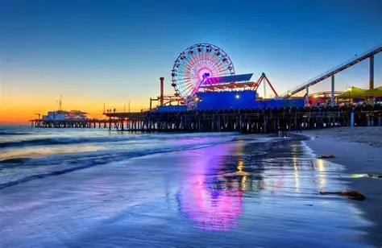
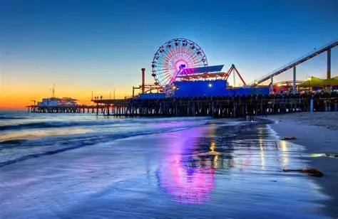

About the state
From San Diego in the south to Butte Valley National Park in the north, California is a state of incredible diversity and beauty.
California is the most populous state in the USA. It has aroud 39 million inhabitants according to a 2024 estimate. It beats Texas with its 30 million and Florida with 22 million and is therefore the most populated state in the USA.
The state capital is Sacramento. Sacramento is located Nort-West of the very famous national park Yosemite and North-East of San Fransico. A state capital is a city in the state that serves as its political hub. Basically its the place with the most amount of politics. Other states such as Texas has Austin and Florida has Tallahassee. The capital city doesn't need to be the largest city in the state.
California had many famous things that when heard or mentioned makes you think about the state. It could be cities such as Los Angeles and San Francisco. Locations such as the Golden Gate Bridge, Hollywood and Disneyland, beautiful sceneri like Yosemite nathional park, Santa Monica beach and part of Death Valley.
With California being the most populous state in the USA, it makes sense that it has the largest economy. The state of California actually has the largest GSP in the entire country with it being around 4.172 trillion USD or 102 500 per capita. We can compare this to a country like the UK with California having a GSP 1.5 times larger than the entirety of the UK.
California has alot of places too see and with that there will be landmarks that every tourist would want to visit. Some of Californias most famous landmarks are located within the larger cities with places like Santa Monica Pier and the Hollywood Sign in LA, and The Golden Gate Bridge and San Francisco cable cars in San Francisco. there always landmarks to discover.
When talking about media, entertainment and technology, California is the ultimate hub for just that. When it comes to media, one of the oldest radio stations still around is located in the San Fransico Bay was founded in 1909 ans is called KCBS (AM). On the entertainment side alot of big movie studios have their offices in Hollywood. The "Big 5" of the movie industry being Columbia, Disney, Paramount, Universal and Warner Bros are all based in LA. Alot of smaller studios such as Blumhouse and animation studios like Dreamworks and Illumination are also located here. Technology and California has always been pretty interconnected. That is due to Silicon Valley being the hub for many of the worlds largest tech companies. Three of "The Big 5" within tech being Apple, Meta and Google are all based here. Other companies like Netflix, Youtube, Microsoft, Amazon and Yahoo! are also based here.
.jpg) 
